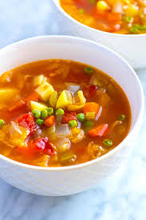

Odin Recipes: Soup

In order to make the best soup, you will need the following ingredients for the recipe.
Ingredients:
- 200g chopped vegetables such as onions, celery and carrots
- 300g potatoes cubed
- 1 tbsp oil
- 700ml stock
- crème fraîche and fresh herbs, to serve
Once you have everything for the recipe, now, you must follow the next steps.
Instructions:
- Fry the vegetables and potatoes in a pan with the oil for a few minutes until beginning to soften
- Cover with the stock and simmer for 10-15 mins until the veg is tender. Blend until smooth, then season. Serve with a dollop of crème fraîche and some fresh herbs. Will freeze for up to one month
Now, you have the best soup of your city in your hands!
Hope you enjoyed the recipe!
Please click to return to the homepage.